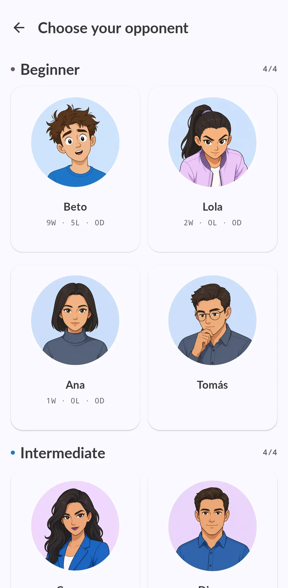

Chess bots to play against, from beginner to grandmaster
Twenty rivals with a name, a rating and a way of playing.

The twenty rivals
Five levels, four rivals each.
| Level | Rival | Rating | How they play |
|---|---|---|---|
| Beginner | Beto | 750 | Just learning. Hangs pieces. Don't feel bad if you win in 10 moves. |
| Lola | 900 | Still learning the openings. Leaves pieces where they can be taken. | |
| Ana | 1100 | Slow and careful. Avoids trades unless they help. Hard to rush. | |
| Tomás | 1150 | Likes good knight squares and central pawns. Will outplay you slowly if allowed. | |
| Intermediate | Carmen | 1250 | Club beginner. Spots one-move threats and misses the rest. |
| Diego | 1350 | No big style: plays the position as it comes. A real tester at this level. | |
| Sara | 1450 | Quiet manoeuvres, slow improvements. Don't expect tactical fireworks. | |
| Hugo | 1550 | Solid club level. Rarely hangs a piece, but two-move tactics get past him. | |
| Advanced | Kenji | 1670 | Defends calmly and counterattacks when you drop your guard. |
| Tariq | 1760 | Trained on real club games. Solid openings, and the odd tactic slips past. | |
| Ingrid | 1870 | Clean structures and few mistakes; you have to beat her move by move. | |
| Pavel | 1950 | A complete player; punishes the slightest inaccuracy. | |
| Master | Iván | 1750 | Strong club player. Punishes clear mistakes and drifts in quiet positions. |
| Marta | 1850 | Builds her position brick by brick. Punishes inaccuracies in the long run. | |
| Javier | 1950 | Just below expert level. You need a real plan to beat him. | |
| Gabriel | 2150 | All-round strong player at the gates of master level. No weak spots. | |
| Grandmaster | Levon | 2600 | Grandmaster strength. One clear mistake is usually enough to lose. |
| Judit | 2650 | Rarely leaves you anything. | |
| Hikaru | 2792 | Tactics and speed. Punishes the smallest inaccuracy. | |
| Magnus | 2841 | Endless technique. The last boss. |
Bots that lose like people, not like broken engines
The usual way to make an engine weaker is a random bad move.
The four advanced rivals are Maia.

After the game
Every game against a bot goes to your list.
Questions
Is it free to play against the bots?
Yes. Playing against the bots is free.
Which bot should I play against?
One slightly above your rating.
Can I play against bots offline?
Yes. The engines run on your phone.
Are there bots that play like humans?
Yes. The four advanced rivals are Maia.